a) On voudrait des informations sur Jean-Guy Lauzon. C'est un fournisseur. «Des informations» -> tout ce qu'on a sur Jean-Guy Lauzon dans la base de données. On cherche tout sur le client «Jean-Guy Lauzon »:
solution
En langage SQL :
SELECT *
FROM Fournisseur AS f
WHERE f.Contact LIKE "jean?guy*Lauzon";
Resultat
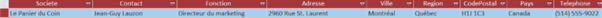
b) On veut vérifier les coordonnées des clients parisiens : en donner une liste triée par société. Coordonnées des clients parisiens -> Coordonnées géographique et contact (mail, téléphone…)
solution
En langage SQL :
SELECT c.Contact, c.Societe, c.Ville, c.CodePostal, c.Tel, c.MailCli
FROM Clientele AS c
WHERE c.Ville = "Paris"
ORDER BY c.Societe;
Remarque: Marc Randon à pour code postal «76001», alors qu’il est à Paris.
-> Soit la ville est incorrecte, soit le code postal l’est.
Resultat
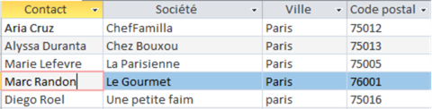
c) Quels sont les produits de provenance des Etats-Unis ayant un cout de moins de 25€ ? (On veut les connaître noms et prix, nom du fournisseur et ville.) Nom du fournisseur ici interprété en tant que contact et société fournisseur.
solution
En langage SQL :
SELECT DISTINCT p.NomProduit, p.CoutAchat, f.Contact, f.Societe, f.Ville
FROM Fournisseur AS f INNER JOIN Produit AS p ON f.NFournisseur = p.NFournisseur
WHERE p.CoutAchat < 25 AND f.Pays IN ("Etats-Unis", "USA", "U.S.A.")
ORDER BY p.NomProduit, f.Societe;
Resultat
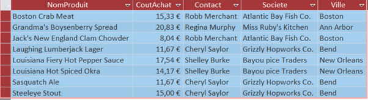
d) Quels sont les produits (fournisseur et pays de provenance) de catégorie viandes ou poissons ayant un coût d'achat de plus de 50€ ? (On veut les connaître noms et prix, nom du fournisseur, ville et pays d'origine.) Nom du fournisseur ici interprété en tant que société fournisseur.
solution
En langage SQL :
SELECT p.NomProduit, p.CoutAchat, f.Societe, f.Ville, f.Pays
FROM (Fournisseur AS f INNER JOIN Produit AS p ON f.NFournisseur = p.NFournisseur)
INNER JOIN Categorie AS c ON p.CodeCategorie = c.CodeCategorie
WHERE (c.NomCategorie LIKE "*poisson*" OR c.NomCategorie LIKE "*viande*")
AND p.CoutAchat > 50
ORDER BY 1, 3;
Resultat
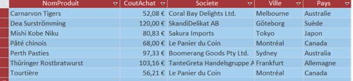
e) Quels sont clients qui achètent de la viande ou du poisson ? On cherche les clients dont les produits achetés correspondent aux catégories viande ou poisson:
solution
En langage SQL :
SELECT DISTINCT cli.Societe, cli.Contact
FROM (((Clientele AS cli INNER JOIN Commande AS com ON cli.CodeClient = com.CodeCli)
INNER JOIN DetailCommande AS dc ON com.NCommande = dc.NCommande)
INNER JOIN Produit AS p ON dc.RefProduit = p.RefProduit)
INNER JOIN Categorie AS cat ON p.CodeCategorie = cat.CodeCategorie
WHERE cat.NomCategorie LIKE "*viande*" OR cat.NomCategorie LIKE "*poisson*"
ORDER BY 1,2;
Resultat
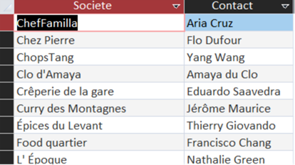
f) Quels sont les produits conditionnés dans du carton ou dans du verre ?
solution
En langage SQL :
SELECT p.NomProduit, c.NomCategorie
FROM Produit AS p INNER JOIN Categorie AS c ON p.CodeCategorie = c.CodeCategorie
WHERE p.QuantiteParUnite LIKE "*carton*" OR p.QuantiteParUnite LIKE "*verre*"
ORDER BY 2;
Resultat
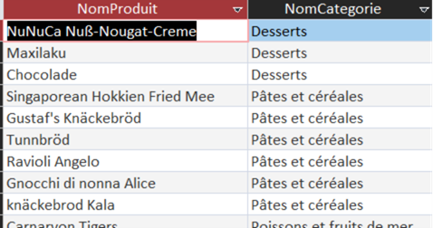
g) Quels sont clients qui n'ont pas encore passé de commandes (Code, société et mail) ?
solution
En langage SQL :
SELECT cli.CodeClient, cli.Societe, cli.MailCli
FROM Clientele AS cli
WHERE NOT EXISTS (
SELECT com.CodeCli FROM Commande AS com WHERE com.CodeCli = cli.CodeClient
) ORDER BY 1;
Resultat
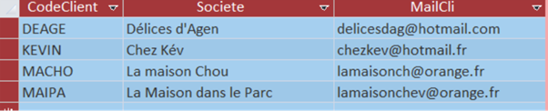
h) Quelles sont les catégories de produit vendues par les fournisseurs américains ?
solution
En langage SQL :
SELECT DISTINCT c.NomCategorie
FROM (Categorie AS c INNER JOIN Produit AS p ON c.CodeCategorie = p.CodeCategorie)
INNER JOIN Fournisseur AS f ON p.NFournisseur = f.NFournisseur
WHERE f.Pays IN ("Etats-Unis", "USA", "U.S.A.")
ORDER BY 1;
Resultat
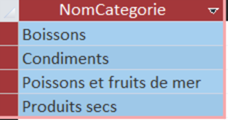
i) Quel sont les 5 dernières commandes du client «Max Deschamps» ?
solution
En langage SQL :
SELECT TOP 5 com.NCommande, com.DateCde
FROM Commande AS com INNER JOIN Clientele AS cli ON com.CodeCli = cli.CodeClient
WHERE cli.Contact LIKE "max?deschamps"
ORDER BY 2 DESC, 1;
Resultat
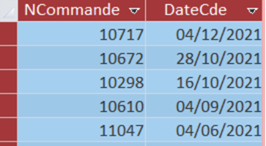
j) Est-ce qu'il y a des fournisseurs sans produits au catalogue ?
solution
En langage SQL :
SELECT Count(*) AS NbFourniNonCatalogue
FROM Fournisseur AS f
WHERE NOT EXISTS (
SELECT p.NFournisseur
FROM Produit AS p
WHERE p.NFournisseur = f.NFournisseur)
ORDER BY 1;
Resultat
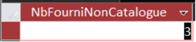
k) Quels fournisseurs hors France n'ont pas encore de produits au catalogue de Kdou ?
solution
En langage SQL :
SELECT f.Societe
FROM Fournisseur AS f LEFT JOIN Produit AS p ON p.NFournisseur = f.NFournisseur
WHERE p.NomProduit IS NULL AND f.Pays <> "france"
ORDER BY 1;
Resultat
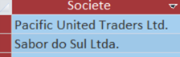
l) Pour optimiser les livraisons, on regarde quels couples de clients sont à Paris. Lister les possibilités avec pour chacun Code, société et mail.
solution
En langage SQL :
SELECT c1.CodeClient, c1.Societe, c1.MailCli, c2.CodeClient, c2.Societe, c2.MailCli
FROM Clientele AS c1, Clientele AS c2
WHERE c1.Ville = c2.Ville AND c1.CodeClient < c2.CodeClient
ORDER BY 1;
Resultat
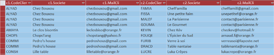
m) Quels fournisseurs proposent de la viande et du poisson ?
solution
En langage SQL :
SELECT DISTINCT f.Societe
FROM Fournisseur AS f
WHERE f.NFournisseur IN (
SELECT p.NFournisseur
FROM Produit AS p INNER JOIN Categorie AS c ON p.CodeCategorie = c.CodeCategorie
WHERE c.NomCategorie LIKE "*viande*")
AND f.NFournisseur IN (
SELECT p.NFournisseur
FROM Produit AS p
INNER JOIN Categorie AS c ON p.CodeCategorie = c.CodeCategorie
WHERE c.NomCategorie LIKE "*poisson*")
ORDER BY 1;
Resultat
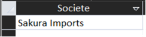